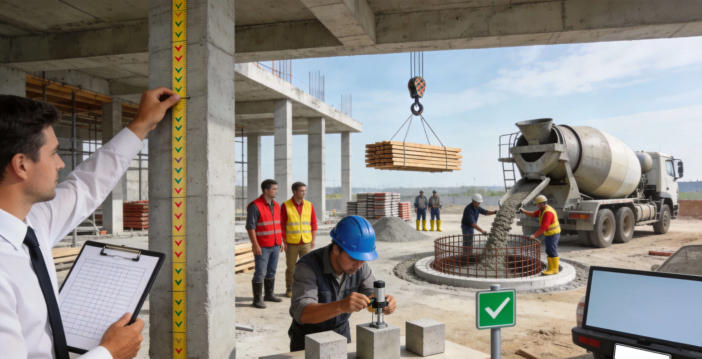
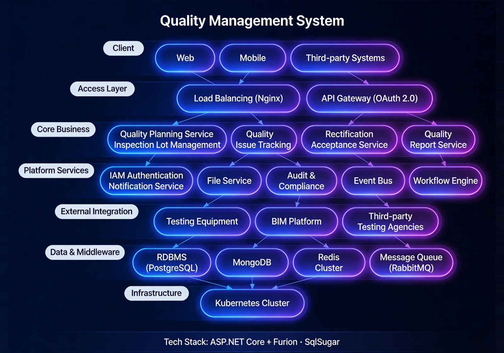
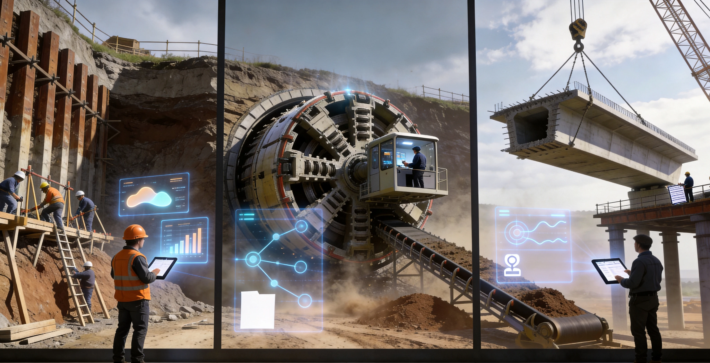

The Quality Management System is a full-lifecycle quality management platform for civil-engineering projects. Addressing the fact that construction quality directly affects safety and service life and that traditional management finds it hard to detect and correct quality issues promptly, the system covers process inspection, first-piece acceptance, on-site supervision, and reward/penalty traceability, achieving process inspection, problem closed loop, and quality traceability. It helps enterprises detect and correct quality issues promptly, ensuring each process meets technical standards and driving continuous quality improvement.

Key Features
The system covers quality inspection, reward/penalty, first-piece, and on-site supervision — four core modules forming full-lifecycle quality management.
Quality Inspection
Process quality inspection with problem recording and rectification tracking.
Reward/Penalty
Record quality-related penalties and rewards for meeting quality standards.
First-Piece Management
Special acceptance and archiving for the first sample before batch construction; approved first pieces serve as quality references for subsequent work.
On-Site Supervision
On-site supervision for critical processes and high-risk operations.
System Architecture

Quality Closed Loop
The system adopts a full-lifecycle quality architecture: inspection → problem recording → rectification → verification. Integration with the BIM lightweight system marks problem locations in 3D models, with bilingual (Chinese/English) quality records meeting both Chinese engineering standards and Nigerian local standards.
Application Scenarios
Suitable for process quality inspection, first-piece sample acceptance, critical-process on-site supervision, and quality reward/penalty traceability.
Process Quality Inspection
Process quality inspection with problem recording and rectification closed loop, ensuring each process meets technical standards.
First-Piece Sample Acceptance
Special acceptance and archiving for the first sample before batch construction, serving as the quality reference for subsequent construction.

Critical-Process On-Site Supervision
On-site supervision for critical processes and high-risk operations, ensuring construction process meets quality requirements.
Quality Reward/Penalty Traceability
Record quality-related penalties and rewards, with clear attribution driving continuous quality improvement.
Advantages & Cases
Dual Standard Compliance
Meets the dual requirements of Chinese engineering and technical standards and local Nigerian standards, adapting to cross-border engineering management scenarios.
BIM Linked Positioning
Linked with the BIM lightweight system, it accurately marks the location of quality problems in the 3D model for intuitive positioning and visualized rectification tracking.
Bilingual (Chinese-English) Recording
Supports Chinese-English bilingual quality record filling and report output, meeting the collaborative needs of Chinese and foreign managers.
First Article Control
The first article acceptance serves as the reference standard for subsequent construction, controlling construction quality from the source, and unqualified works will not enter mass construction.
Closed-loop Rectification Tracking
The entire chain of quality problems from discovery, issuance, rectification to acceptance and re-inspection forms a closed loop, with clear responsibilities assigned to individuals and specific deadlines set.
Process Inspection
Supports setting inspection plans according to process nodes, with on-site photo taking, signing, and scoring completed in one step, making the process quality controllable.
Requirement Research
Gain in-depth understanding of the project quality management system and construction standards, and sort out quality inspection items, acceptance nodes and rectification processes.
System Deployment
Supports on-premises deployment and cloud deployment, adapting to on-site construction management needs and offline operation scenarios.
Training and Launch
Provides tiered training for administrators, quality inspectors and construction personnel, covering inspection item configuration, inspection filling, rectification tracking and report usage.
Launch Acceptance
Acceptance is carried out in three stages: quality inspection process testing, BIM linkage verification, and report output, ensuring the system is stable before official delivery.
Quality Control for Lagos FIRS Project and Light Rail Blue Line Project
Background: Large-scale engineering projects have high requirements for construction quality, and the timely discovery of quality problems and closed-loop rectification are the key to the smooth progress of the project.
Challenges: Traditional paper records are easy to lose and difficult to trace, the location of quality problems is not clearly described, and the rectification progress is difficult to grasp in real time.
Solution: Deploy a quality management system, through functions such as process inspection, first article acceptance and side station supervision, to realize timely discovery of quality problems and digital closed-loop rectification.
Result Data: The timeliness of quality problem discovery is improved, the rectification closed-loop cycle is shortened, and the construction quality is continuously improved.
Customer Testimonial: ——